המשפטים על כל בעל חיים נשארו באנגלית, וממתינים לבדיקה.
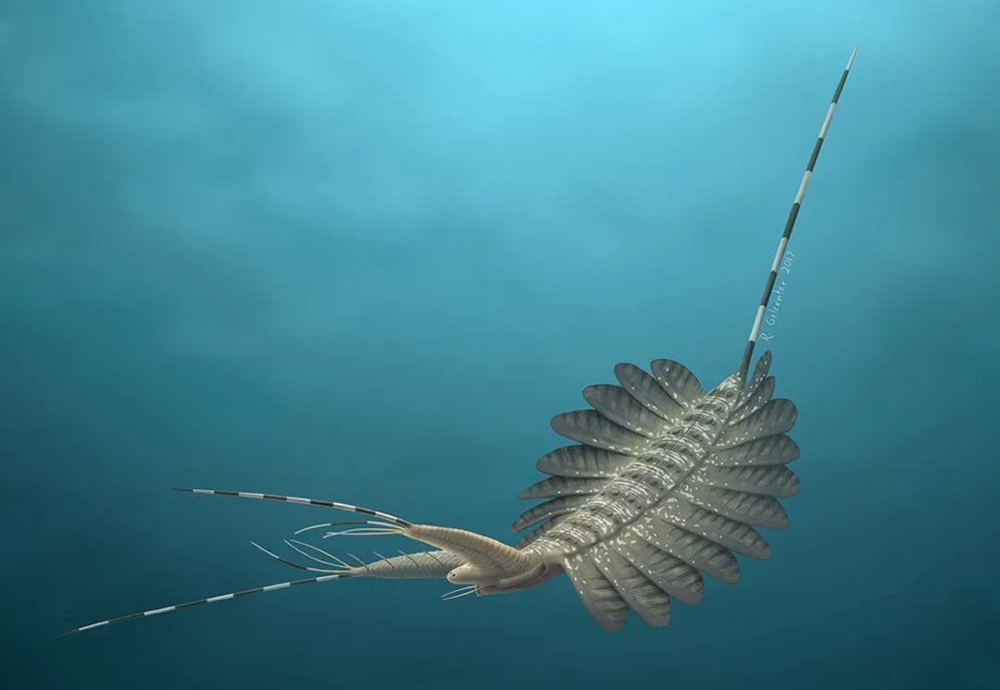
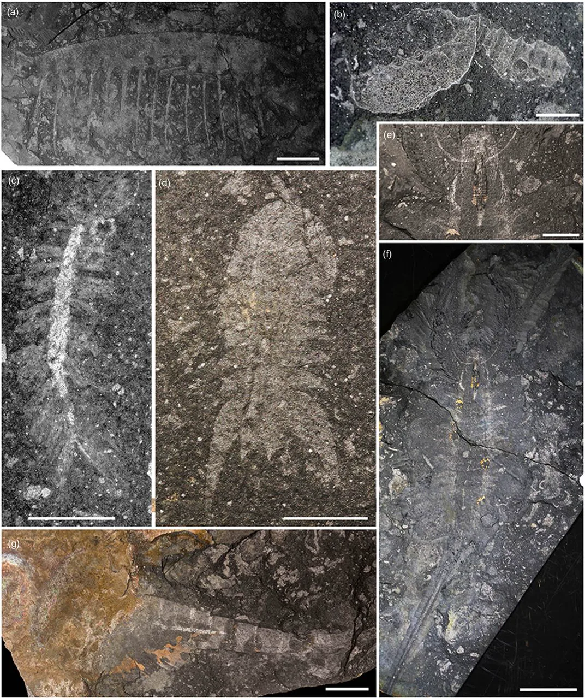
Sirius Passet An Early Cambrian seafloor in north Greenland, about 518 million years ago.
שחזור. Rebecca Gelernter, CC BY 4.0, via Wikimedia Commons. Artist’s concept from Park and others, 2018. עמוד הקובץ · מאובן. David A. T. Harper, Emma U. Hammarlund, Timothy P. Topper, Arne T. Nielsen, Jan A. Rasmussen, Tae-Yoon S. Park and M. Paul Smith, CC BY 4.0, via Wikimedia Commons. The original file is 1073 pixels wide. This page serves 1073 pixels wide. עמוד הקובץ · מקור: Sirius Passet review (Harper and others, 2019). Linked from this site’s coin.
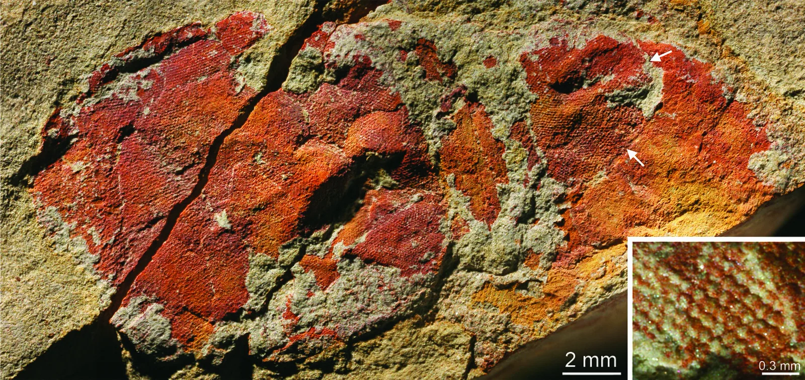
Emu Bay Shale An Early Cambrian shale on Kangaroo Island, about 514 million years ago.
UNE Photos, CC BY 2.0, via Wikimedia Commons. The original file is 3187 pixels wide. This page serves 1920 pixels wide, not enlarged. עמוד הקובץ · מקור: Fossil eyes of Anomalocaris (Paterson and others, 2011). Linked from this site’s coin.
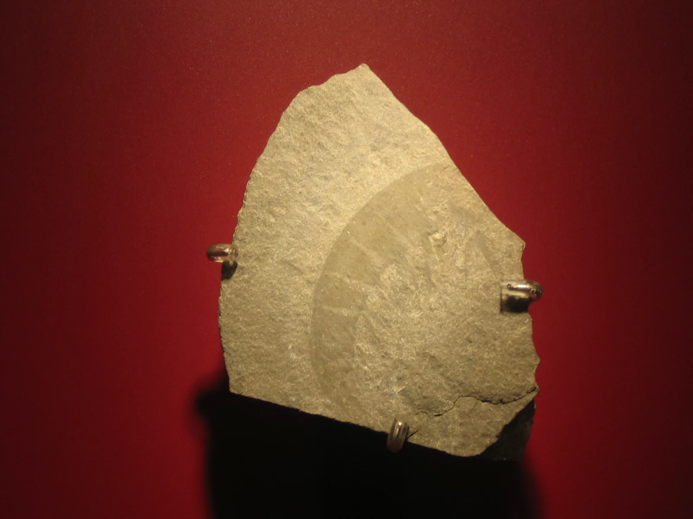
Anomalocaris A top hunter in the Burgess Shale, about 508 million years ago, in the Cambrian explosion.
שחזור. Matteo De Stefano / MUSE, Science Museum of Trento, CC BY-SA 3.0, via Wikimedia Commons. Photo of a model. עמוד הקובץ · מאובן. Esv, CC BY-SA 3.0, via Wikimedia Commons. The original file is 1600 pixels wide. This page serves 1600 pixels wide. עמוד הקובץ · מקור: Royal Ontario Museum: The Burgess Shale. Linked from this site’s coin.
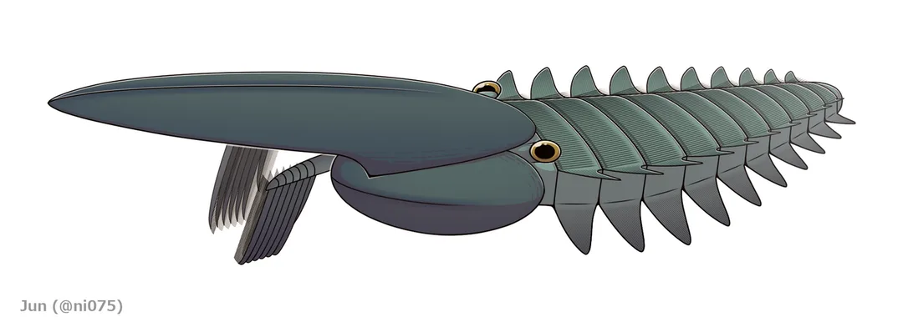
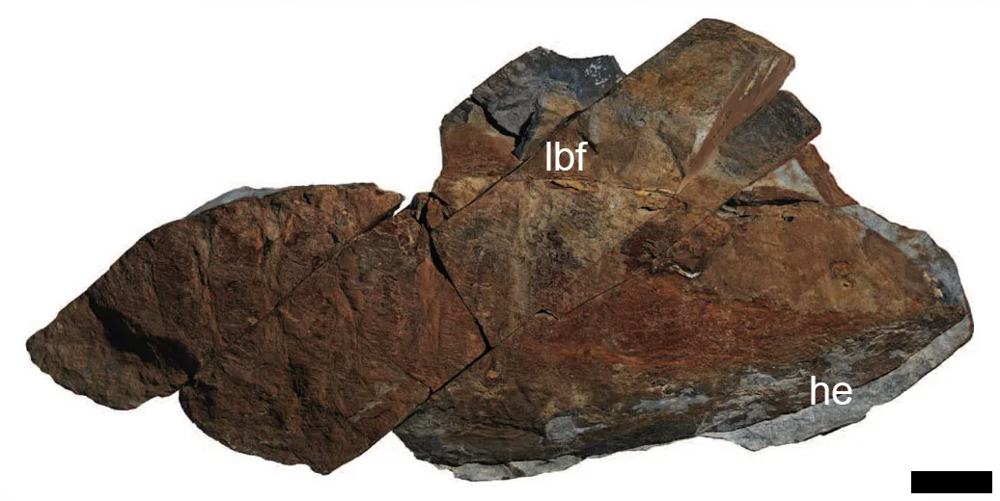
Aegirocassis A giant filter-feeder from the Early Ordovician seafloor near Zagora, about 478 million years ago.
שחזור. Junnn11, CC BY-SA 4.0, via Wikimedia Commons. Artist’s concept. עמוד הקובץ · מאובן. Cédric Aria, CC BY 4.0, via Wikimedia Commons. The original file is 1036 pixels wide. This page serves 1036 pixels wide. עמוד הקובץ · מקור: Giant filter-feeder Aegirocassis (Van Roy, Daley, and Briggs, 2015). Linked from this site’s coin.
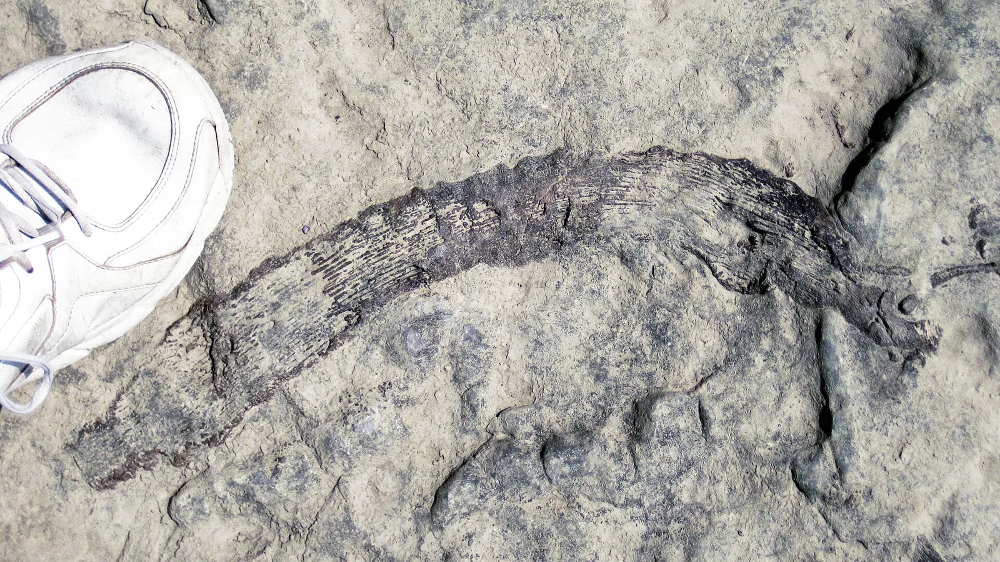
Falls of the Ohio Horn corals in a Middle Devonian seafloor in Indiana, about 390 million years ago.
James St. John, CC BY 2.0, via Wikimedia Commons. The original file is 3252 pixels wide. This page serves 1920 pixels wide, not enlarged. עמוד הקובץ · מקור: Falls of the Ohio visitor site. The age, about 390 million years, is the one stated on this site’s coin.
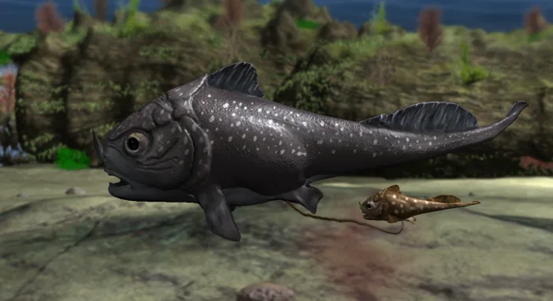
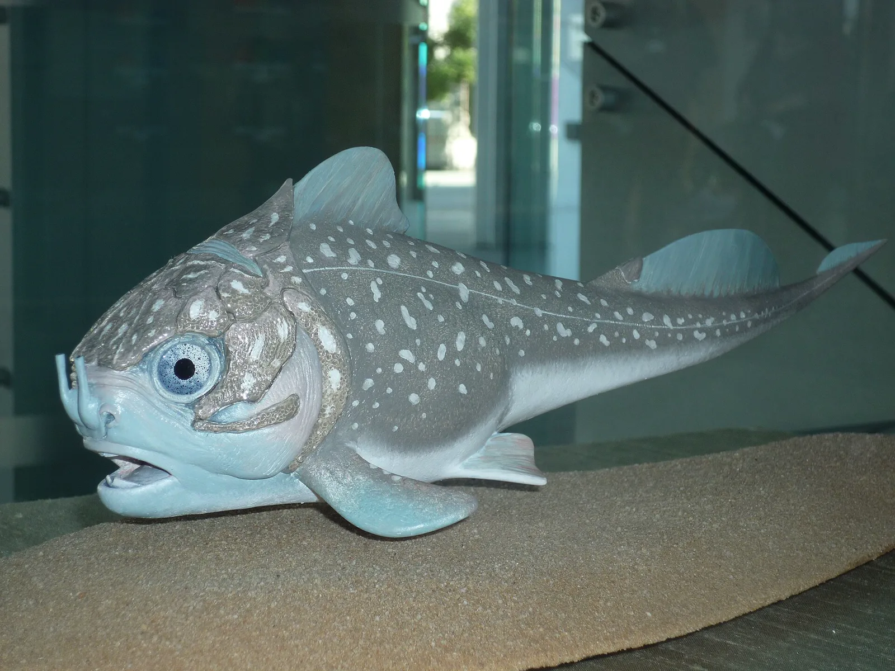
Materpiscis A reef fish from the Gogo Formation, about 380 million years ago, preserved with an embryo. The picture is a museum model, not the fossil.
שחזור. Sularko, CC BY-SA 3.0, via Wikimedia Commons. Artist’s concept. עמוד הקובץ · מאובן. Sularko, CC BY-SA 3.0, via Wikimedia Commons. The original file is 3648 pixels wide. This page serves 1920 pixels wide, not enlarged. עמוד הקובץ · מקור: Long and others, 2008, Nature. Linked from this site’s coin.
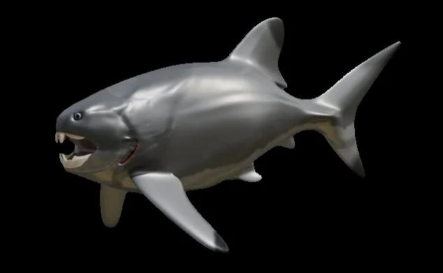
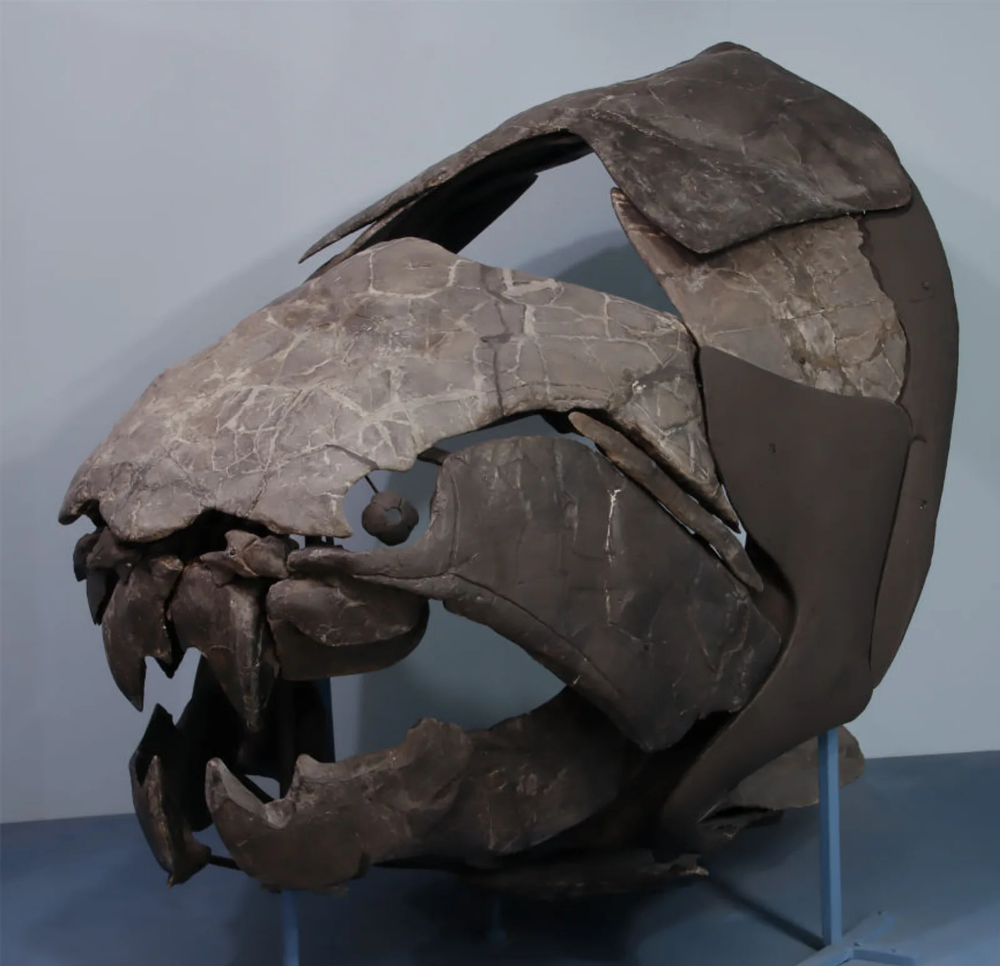
Dunkleosteus An armored fish from the Cleveland Shale, about 360 million years ago, near the end of the Devonian. The skull and belly armor in the picture are real. Some side plates are rebuilt.
שחזור. PlacodermReconstructions, CC BY 4.0, via Wikimedia Commons. Artist’s concept. עמוד הקובץ · מאובן. Russell K. Engelman, CC BY-SA 4.0, via Wikimedia Commons. The original file is 1730 pixels wide. This page serves 1730 pixels wide. עמוד הקובץ · מקור: Dunkleosteus armor (Engelman, 2024). Linked from this site’s coin.
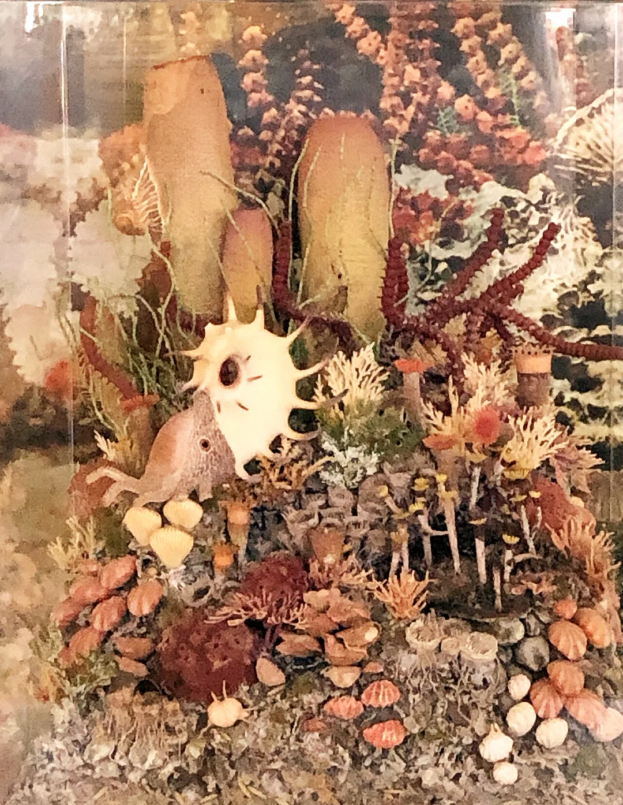
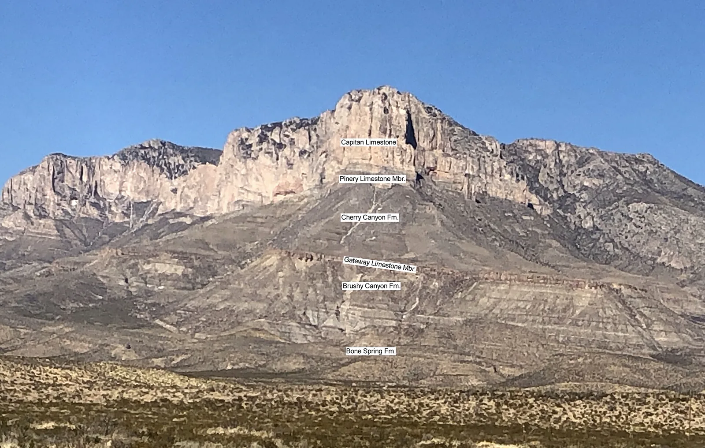
Capitan Reef A Middle Permian reef in Texas, about 265 to 260 million years ago.
שחזור. Kenneth Carpenter, CC BY-SA 4.0, via Wikimedia Commons. Photo of a National Park Service diorama. עמוד הקובץ · מאובן. Carpenter, Kenneth, CC BY-SA 4.0, via Wikimedia Commons. The original file is 4681 pixels wide. This page serves 1920 pixels wide, not enlarged. עמוד הקובץ · מקור: National Park Service: geologic formations. Linked from this site’s coin.
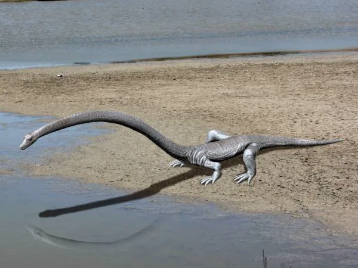
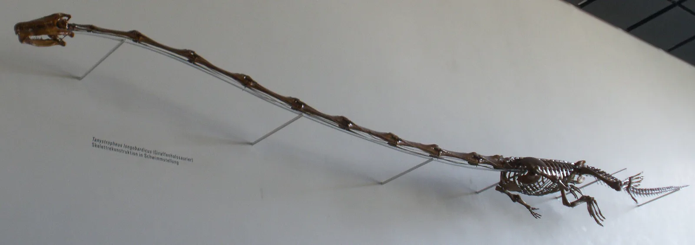
Monte San Giorgio A Middle Triassic sea, about 245 to 230 million years ago. The coin names sea reptiles, fish, and ammonites. The picture is Tanystropheus.
שחזור. Nobu Tamura, CC BY-SA 4.0, via Wikimedia Commons. Artist’s illustration. עמוד הקובץ · מאובן. Ghedoghedo, CC BY-SA 3.0, via Wikimedia Commons. The original file is 3244 pixels wide. This page serves 1920 pixels wide, not enlarged. עמוד הקובץ · מקור: UNESCO World Heritage: Monte San Giorgio. Linked from this site’s coin.
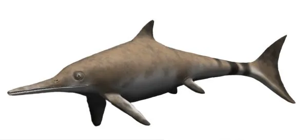
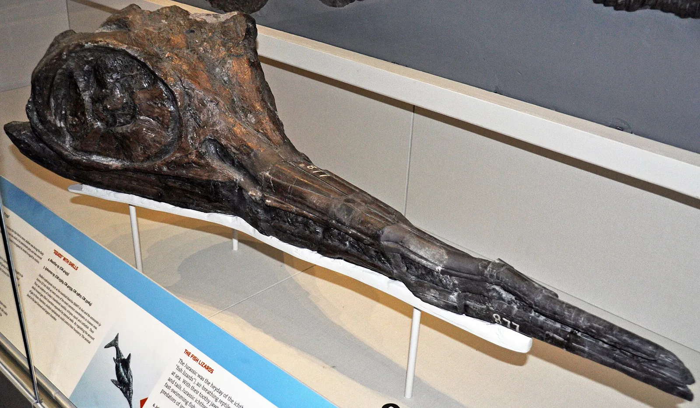
Ichthyosaurus Ichthyosaurus communis. Paleobiology Database occurrences are binned from the Rhaetian through the Early Pliensbachian. On this timescale the oldest bin starts at 205.7 and the youngest ends at 174.7 million years ago. The picture is the Lyme Regis skull on the Jurassic Coast coin. The slider uses 196, inside the Sinemurian bins, not a single measured year.
שחזור. Nobu Tamura, CC BY 3.0, via Wikimedia Commons. Artist’s illustration. עמוד הקובץ · מאובן. James St. John, CC BY 2.0, via Wikimedia Commons. The original file is 3601 pixels wide. This page serves 1920 pixels wide, not enlarged. עמוד הקובץ · מקור: Paleobiology Database occurrences of Ichthyosaurus communis, with time bins.
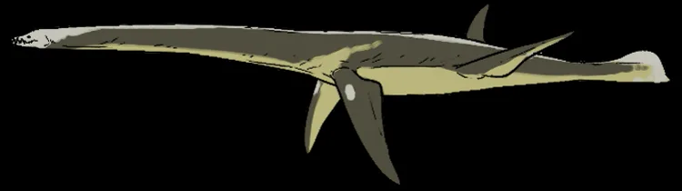
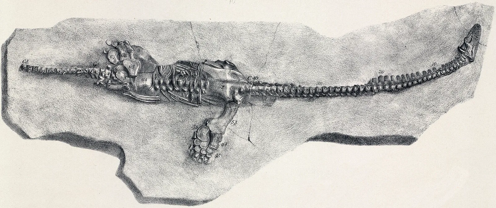
Plesiosaurus Plesiosaurus dolichodeirus. A Paleobiology Database occurrence of the type is Late Sinemurian, 199.5 to 192.9 million years ago on this timescale. Mary Anning found the first articulated skeleton (Natural History Museum, London). The picture is a historical figure of a Lower Lias skeleton.
שחזור. Connor Ashbridge, CC BY-SA 4.0, via Wikimedia Commons. Artist’s life restoration, not a photograph. The original file is 751 pixels wide. This card serves 750, not enlarged. עמוד הקובץ · מאובן. J. Dinkel, Public domain, via Wikimedia Commons. The original file is 3505 pixels wide. This page serves 1920 pixels wide, not enlarged. עמוד הקובץ · מקור: Paleobiology Database occurrences of Plesiosaurus dolichodeirus. The Natural History Museum page is the second link. · מקור: Natural History Museum, London: Mary Anning’s plesiosaur.
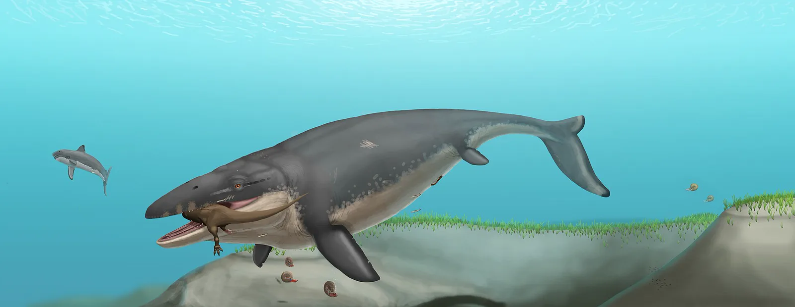
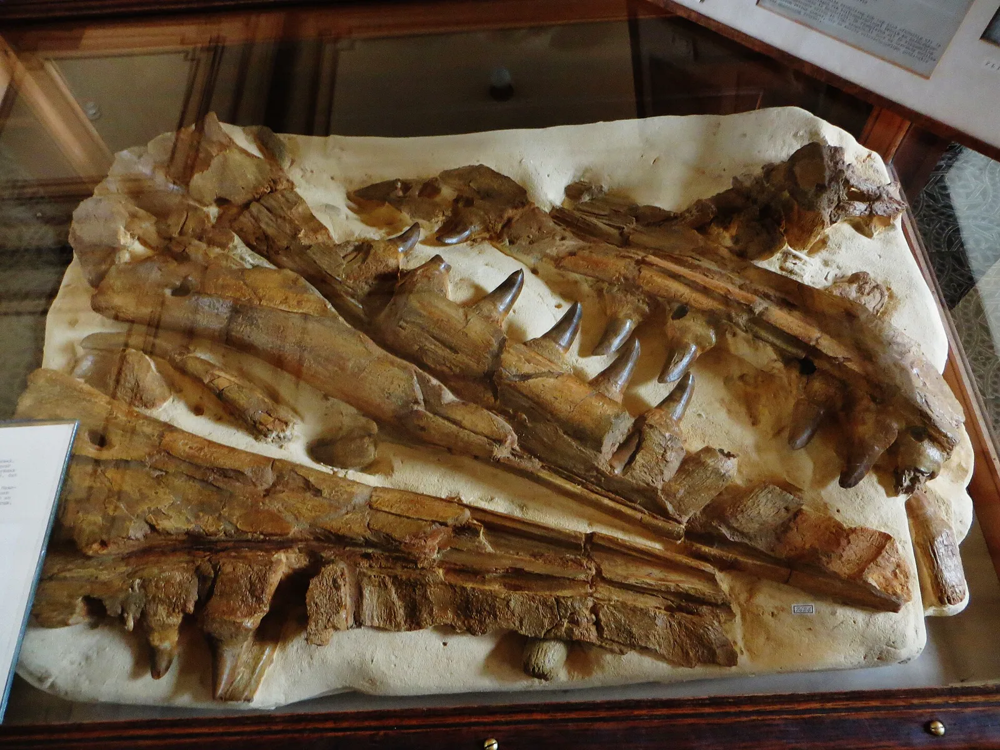
Mosasaurus Mosasaurus hoffmannii. Paleobiology Database occurrences are binned from the Campanian through the Maastrichtian. On this timescale the oldest bin starts at 83.6 million years ago. Most are Late Maastrichtian. The youngest stored bin edge is 61.66, a bin boundary, not a claim that it lived past the end of the Cretaceous. The picture is a skull photographed at the Teylers Museum in Haarlem.
שחזור. Jonagold2000, CC BY-SA 4.0, via Wikimedia Commons. Artist’s life restoration, not a photograph. The original file is 5766 pixels wide. This card serves 1600, not enlarged. עמוד הקובץ · מאובן. Ghedoghedo, CC BY-SA 4.0, via Wikimedia Commons. The original file is 4000 pixels wide. This page serves 1920 pixels wide, not enlarged. עמוד הקובץ · מקור: Paleobiology Database occurrences of Mosasaurus hoffmannii, with time bins.
Wadi Al-Hitan Whales that still had hind legs, from the Late Eocene of Egypt, about 40 to 37 million years ago.
Tom Horton from Shanghai, China, CC BY-SA 2.0, via Wikimedia Commons. The original file is 2736 pixels wide. This page serves 1920 pixels wide, not enlarged. עמוד הקובץ · מקור: UNESCO World Heritage: Wadi Al-Hitan (Whale Valley). Linked from this site’s coin.
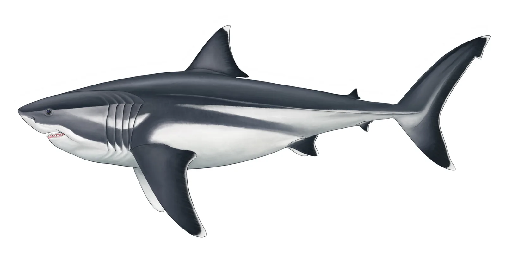
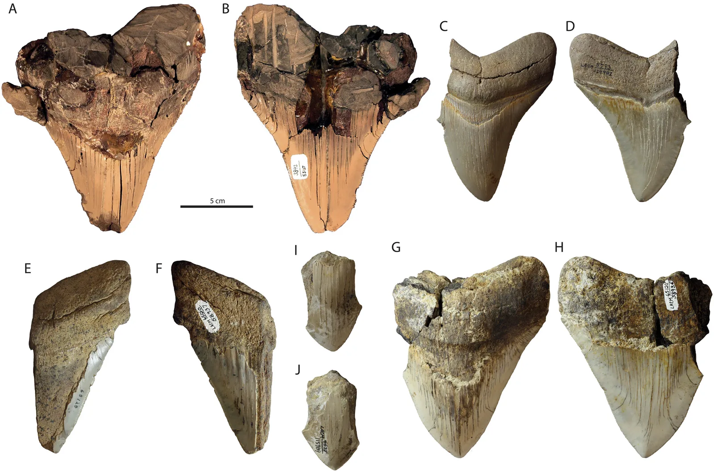
Otodus megalodon A giant shark. Boessenecker and others, 2019, record it from middle Miocene rocks through the early Pliocene, and put the extinction at about 3.6 million years ago. The teeth in the picture are from the Capistrano Formation. That paper’s corrected age for this set is 5.6 to 3.7 million years.
שחזור. Oliver E. Demuth, CC BY 4.0, via Wikimedia Commons. Artist’s life restoration, not a photograph. The original file is 1970 pixels wide. This card serves 1600, not enlarged. עמוד הקובץ · מאובן. Robert W. Boessenecker, Dana J. Ehret, Douglas J. Long, Morgan Churchill, Evan Martin, Sarah J. Boessenecker, CC BY 4.0, via Wikimedia Commons. The original file is 2708 pixels wide. This page serves 1920 pixels wide, not enlarged. עמוד הקובץ · מקור: Boessenecker and others, 2019, PeerJ.


.png){kind=link}